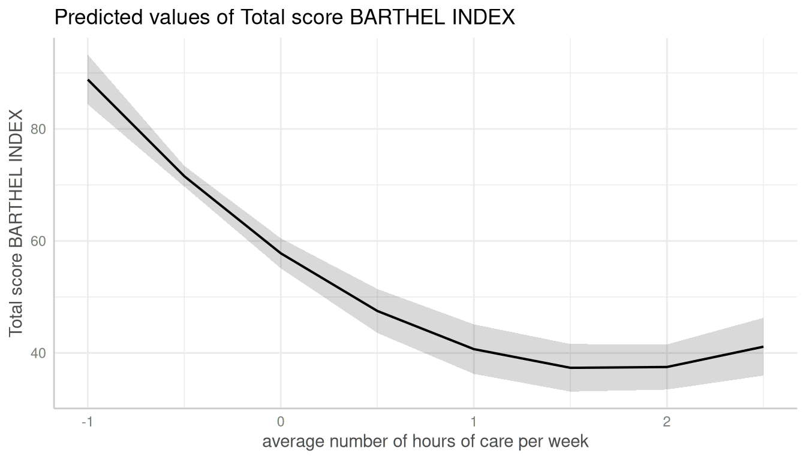
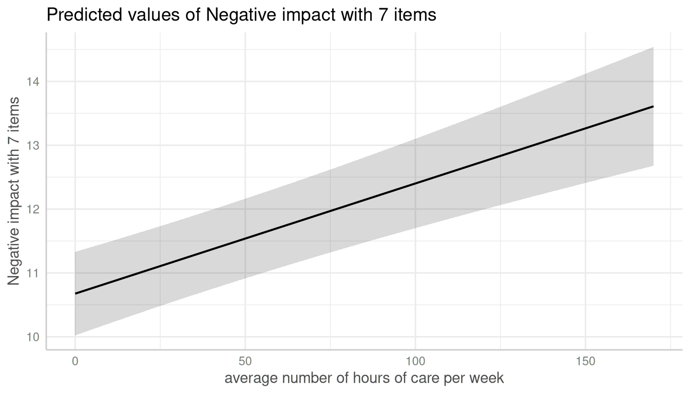

Introduction: Marginal Effects at Specific Values
Daniel Lüdecke
2020-11-30
Source:vignettes/introduction_effectsatvalues.Rmd
introduction_effectsatvalues.RmdMarginal effects at specific values or levels
This vignettes shows how to calculate marginal effects at specific values or levels for the terms of interest. It is recommended to read the general introduction first, if you haven’t done this yet.
The terms-argument not only defines the model terms of interest, but each model term can be limited to certain values. This allows to compute and plot marginal effects for (grouping) terms at specific values only, or to define values for the main effect of interest.
There are several options to define these values, which always should be placed in square brackets directly after the term name and can vary for each model term.
Concrete values are separated by a comma:
terms = "c172code [1,3]". For factors, you could also use factor levels, e.g.terms = "Species [setosa,versicolor]".Ranges are specified with a colon:
terms = c("c12hour [30:80]", "c172code [1,3]"). This would plot all values from 30 to 80 for the variable c12hour. By default, the step size is 1, i.e.[1:4]would create the range1, 2, 3, 4. You can choose different step sizes withby, e.g.[1:4 by=.5].Convenient shortcuts to calculate common values like mean +/- 1 SD (
terms = "c12hour [meansd]"), quartiles (terms = "c12hour [quart]") or minumum and maximum values (terms = "c12hour [minmax]"). Seevalues_at()for the different options.A function name. The function is then applied to all unique values of the indicated variable, e.g.
terms = "hp [exp]". You can also define own functions, and pass the name of it to theterms-values, e.g.terms = "hp [own_function]".A variable name. The values of the variable are then used to define the
terms-values, e.g. first, a vector is defined:v = c(1000, 2000, 3000)and then,terms = "income [v]".If the first variable specified in
termsis a numeric vector, for which no specific values are given, a “pretty range” is calculated (seepretty_range()), to avoid memory allocation problems for vectors with many unique values. To select all values, use the[all]-tag, e.g.terms = "mpg [all]". If a numeric vector is specified as second or third variable interm(i.e. if this vector represents a grouping structure), representative values (seevalues_at()) are chosen, which is typically mean +/- SD.To create a pretty range that should be smaller or larger than the default range (i.e. if no specific values would be given), use the
n-tag, e.g.terms = "age [n=5]"orterms = "age [n = 12]". Larger values fornreturn a larger range of predicted values.Especially useful for plotting group levels of random effects with many levels, is the
sample-option, e.g.terms = "Subject [sample=9]", which will sample nine values from all possible values of the variableSubject.
Specific values and value range
library(ggeffects)
library(ggplot2)
data(efc)
fit <- lm(barthtot ~ c12hour + neg_c_7 + c161sex + c172code, data = efc)
mydf <- ggpredict(fit, terms = c("c12hour [30:80]", "c172code [1,3]"))
mydf
#> # Predicted values of Total score BARTHEL INDEX
#> # x = average number of hours of care per week
#>
#> # c172code = low level of education
#>
#> x | Predicted | 95% CI
#> -------------------------------
#> 30 | 67.15 | [64.04, 70.26]
#> 38 | 65.12 | [62.06, 68.18]
#> 47 | 62.84 | [59.81, 65.88]
#> 55 | 60.81 | [57.78, 63.85]
#> 63 | 58.79 | [55.72, 61.85]
#> 80 | 54.48 | [51.28, 57.68]
#>
#> # c172code = high level of education
#>
#> x | Predicted | 95% CI
#> -------------------------------
#> 30 | 68.58 | [65.42, 71.75]
#> 38 | 66.56 | [63.39, 69.73]
#> 47 | 64.28 | [61.08, 67.47]
#> 55 | 62.25 | [59.01, 65.50]
#> 63 | 60.23 | [56.91, 63.54]
#> 80 | 55.92 | [52.39, 59.45]
#>
#> Adjusted for:
#> * neg_c_7 = 11.84
#> * c161sex = 1.76
ggplot(mydf, aes(x, predicted, colour = group)) + geom_line()
When variables are, for instance, log-transformed, ggeffects automatically back-transforms predictions to the original scale of the response and predictors, making the predictions directly interpretable. However, sometimes it might be useful to define own value ranges. In such situation, specify the range in the terms-argument.
data(mtcars)
mpg_model <- lm(mpg ~ log(hp), data = mtcars)
# x-values and predictions based on the full range of the original "hp"-values
ggpredict(mpg_model, "hp")
#> # Predicted values of mpg
#> # x = hp
#>
#> x | Predicted | 95% CI
#> --------------------------------
#> 50 | 30.53 | [27.95, 33.11]
#> 85 | 24.82 | [23.28, 26.36]
#> 120 | 21.11 | [19.96, 22.25]
#> 155 | 18.35 | [17.16, 19.54]
#> 195 | 15.88 | [14.42, 17.34]
#> 230 | 14.10 | [12.36, 15.85]
#> 265 | 12.58 | [10.56, 14.60]
#> 335 | 10.06 | [ 7.55, 12.56]
# x-values and predictions based on "hp"-values ranging from 50 to 150
ggpredict(mpg_model, "hp [50:150]")
#> # Predicted values of mpg
#> # x = hp
#>
#> x | Predicted | 95% CI
#> --------------------------------
#> 50 | 30.53 | [27.95, 33.11]
#> 63 | 28.04 | [25.94, 30.14]
#> 75 | 26.17 | [24.41, 27.93]
#> 87 | 24.57 | [23.07, 26.07]
#> 100 | 23.07 | [21.77, 24.37]
#> 113 | 21.75 | [20.57, 22.94]
#> 125 | 20.67 | [19.54, 21.80]
#> 150 | 18.71 | [17.54, 19.87]By default, the step size for a range is 1, like 50, 51, 52, .... If you need a different step size, use by=<stepsize> inside the brackets, e.g. "hp [50:60 by=.5]". This would create a range from 50 to 60, with .5er steps.
# range for x-values with .5-steps
ggpredict(mpg_model, "hp [50:60 by=.5]")
#> # Predicted values of mpg
#> # x = hp
#>
#> x | Predicted | 95% CI
#> ----------------------------------
#> 50.00 | 30.53 | [27.95, 33.11]
#> 51.50 | 30.21 | [27.69, 32.73]
#> 52.50 | 30.01 | [27.53, 32.48]
#> 53.50 | 29.80 | [27.36, 32.24]
#> 55.00 | 29.50 | [27.12, 31.88]
#> 56.50 | 29.22 | [26.89, 31.54]
#> 57.50 | 29.03 | [26.74, 31.31]
#> 60.00 | 28.57 | [26.37, 30.77]Choosing representative values
Especially in situations where we have two continuous variables in interaction terms, or where the “grouping” variable is continuous, it is helpful to select representative values of the grouping variable - else, predictions would be made for too many groups, which is no longer helpful when interpreting marginal effects.
You can use
-
"minmax": minimum and maximum values (lower and upper bounds) of the variable are used. -
"meansd": uses the mean value as well as one standard deviation below and above mean value. -
"zeromax": is similar to the"minmax"option, however, 0 is always used as minimum value. This may be useful for predictors that don’t have an empirical zero-value. -
"quart"calculates and uses the quartiles (lower, median and upper), including minimum and maximum value. -
"quart2"calculates and uses the quartiles (lower, median and upper), excluding minimum and maximum value. -
"all"takes all values of the vector.
data(efc)
# short variable label, for plot
attr(efc$c12hour, "label") <- "hours of care"
fit <- lm(barthtot ~ c12hour * c161sex + neg_c_7, data = efc)
mydf <- ggpredict(fit, terms = c("c161sex", "c12hour [meansd]"))
plot(mydf)
Transforming values with functions
The brackets in the terms-argument also accept the name of a valid function, to (back-)transform predicted values. In this example, we define a custom function to get the original values of the focal predictor, multiplied by 2.
# x-values and predictions based on "hp"-values, multiplied by 2
hp_double <- function(x) 2 * x
ggpredict(mpg_model, "hp [hp_double]")
#> # Predicted values of mpg
#> # x = hp
#>
#> x | Predicted | 95% CI
#> --------------------------------
#> 104 | 22.65 | [21.39, 23.91]
#> 132 | 20.08 | [18.96, 21.20]
#> 186 | 16.39 | [15.00, 17.78]
#> 210 | 15.08 | [13.50, 16.67]
#> 226 | 14.29 | [12.58, 16.00]
#> 300 | 11.24 | [ 8.97, 13.51]
#> 410 | 7.88 | [ 4.94, 10.83]
#> 670 | 2.59 | [-1.46, 6.65]Pretty value ranges
This section is intended to show some examples how the plotted output differs, depending on which value range is used. Some transformations, like polynomial or spline terms, but also quadratic or cubic terms, result in many predicted values. In such situation, predictions for some models lead to memory allocation problems. That is why ggpredict() “prettifies” certain value ranges by default, at least for some model types (like mixed models).
To see the difference in the “curvilinear” trend, we use a quadratic term on a standardized variable.
library(sjmisc)
library(sjlabelled)
library(lme4)
data(efc)
efc$c12hour <- std(efc$c12hour)
efc$e15relat <- as_label(efc$e15relat)
m <- lmer(
barthtot ~ c12hour + I(c12hour^2) + neg_c_7 + c160age + c172code + (1 | e15relat),
data = efc
)
me <- ggpredict(m, terms = "c12hour")
plot(me)Turn off “prettifying”
As said above, ggpredict() “prettifies” the vector, resulting in a smaller set of unique values. This is less memory consuming and may be needed especially for more complex models.
You can turn off automatic “prettifying” by adding the "all"-shortcut to the terms-argument.

This results in a smooth plot, as all values from the term of interest are taken into account.
Using different ranges for prettifying
To modify the “prettifying”, add the "n"-shortcut to the terms-argument. This allows you to select a feasible range of values that is smaller (and hence less memory consuming) them "terms = ... [all]", but still produces smoother plots than the default prettyfing.


Marginal effects conditioned on specific values of the covariates
By default, the typical-argument determines the function that will be applied to the covariates to hold these terms at constant values. By default, this is the mean-value, but other options (like median or mode) are possible as well.
Use the condition-argument to define other values at which covariates should be held constant. condition requires a named vector, with the name indicating the covariate.
data(mtcars)
mpg_model <- lm(mpg ~ log(hp) + disp, data = mtcars)
# "disp" is hold constant at its mean
ggpredict(mpg_model, "hp")
#> # Predicted values of mpg
#> # x = hp
#>
#> x | Predicted | 95% CI
#> --------------------------------
#> 50 | 25.84 | [22.03, 29.66]
#> 85 | 22.70 | [20.75, 24.64]
#> 120 | 20.65 | [19.59, 21.71]
#> 155 | 19.13 | [17.96, 20.30]
#> 195 | 17.77 | [15.98, 19.56]
#> 230 | 16.79 | [14.46, 19.13]
#> 265 | 15.95 | [13.12, 18.78]
#> 335 | 14.56 | [10.89, 18.24]
#>
#> Adjusted for:
#> * disp = 230.72
# "disp" is hold constant at value 200
ggpredict(mpg_model, "hp", condition = c(disp = 200))
#> # Predicted values of mpg
#> # x = hp
#>
#> x | Predicted | 95% CI
#> --------------------------------
#> 50 | 26.53 | [23.06, 30.00]
#> 85 | 23.38 | [21.73, 25.04]
#> 120 | 21.34 | [20.31, 22.37]
#> 155 | 19.82 | [18.40, 21.24]
#> 195 | 18.46 | [16.34, 20.58]
#> 230 | 17.48 | [14.79, 20.17]
#> 265 | 16.64 | [13.45, 19.83]
#> 335 | 15.25 | [11.21, 19.29]Marginal effects for each level of random effects
Marginal effects can also be calculated for each group level in mixed models. Simply add the name of the related random effects term to the terms-argument, and set type = "re".
In the following example, we fit a linear mixed model and first simply plot the marginal effetcs, not conditioned on random effects.
library(sjlabelled)
library(lme4)
data(efc)
efc$e15relat <- as_label(efc$e15relat)
m <- lmer(neg_c_7 ~ c12hour + c160age + c161sex + (1 | e15relat), data = efc)
me <- ggpredict(m, terms = "c12hour")
plot(me)Changing the type to type = "re" still returns population-level predictions by default. The major difference between type = "fe" and type = "re" is the uncertainty in the variance parameters. This leads to larger confidence intervals for marginal effects with type = "re".

To compute marginal effects for each grouping level, add the related random term to the terms-argument. In this case, confidence intervals are not calculated, but marginal effects are conditioned on each group level of the random effects.

Marginal effects, conditioned on random effects, can also be calculated for specific levels only. Add the related values into brackets after the variable name in the terms-argument.

If the group factor has too many levels, you can also take a random sample of all possible levels and plot the marginal effects for this subsample of group levels. To do this, use term = "<groupfactor> [sample=n]".
data("sleepstudy")
m <- lmer(Reaction ~ Days + (1 + Days | Subject), data = sleepstudy)
me <- ggpredict(m, terms = c("Days", "Subject [sample=8]"), type = "re")
plot(me)